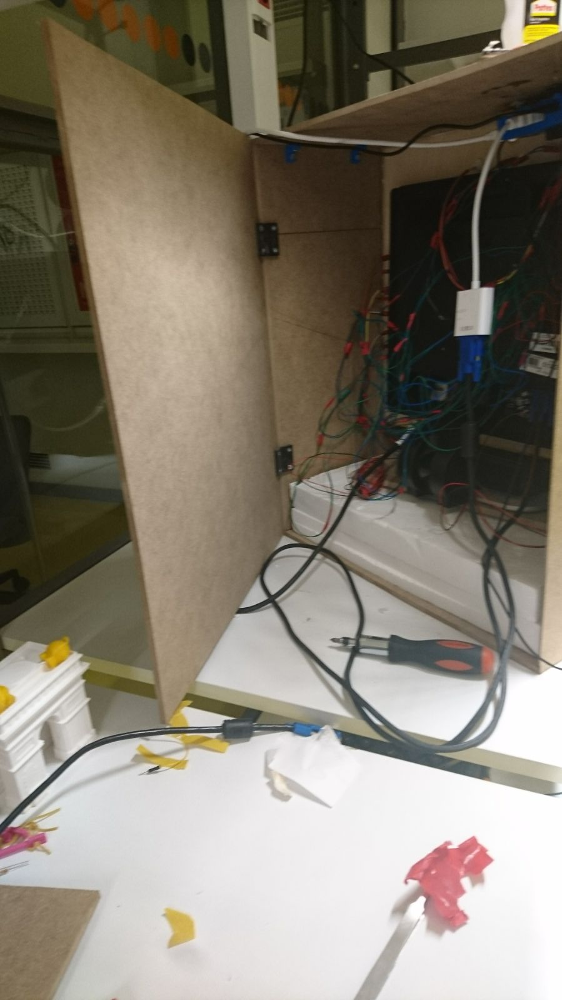
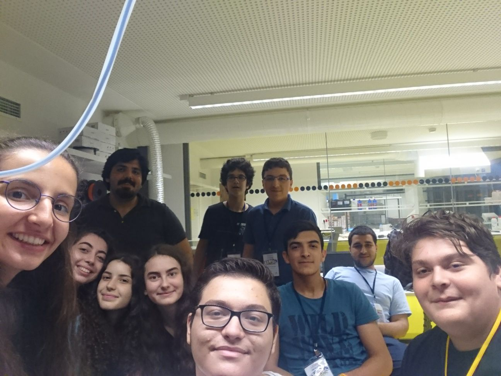
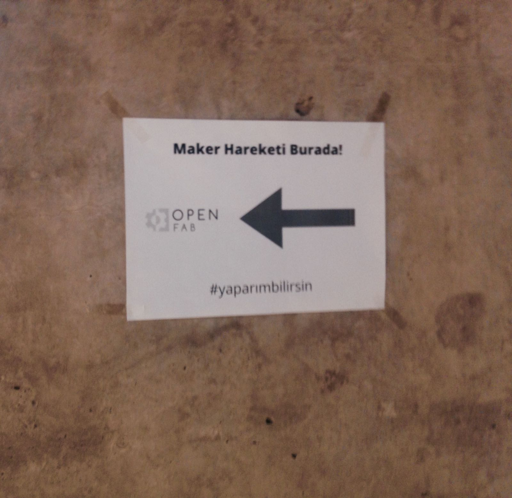

Kararlılığımızdan ödün vermeyerek ders olmayan günde dahi girdik artık evimiz gibi olan merkeze. Herkesin gelmemesi bir hayal kırıklığı yaratsa da asıl bizi üzen kodu bilen arkadaşımızın uzun bir süre boyunca gelmemesi oldu. O geldiğinde ise butonu tekrar çalıştırmayı denedik ve montaj işlemlerine başladık. Artık çalışan bir butonumuzun varlığı ve her parçanın yazıcıdan çıkmış olması bizi umutlandırdı, biz de hemen montaj işlemlerine giriştik. Başta fark etmesek de en zor iş bu oldu bizim için çünkü bantların tutması ve aynı anda kamerayı, Raspberry Pi'ı düzgün yerleştirmek cidden zorlayıcıydı. Kablolar o kadar karışıktı ki Batuhan Abi'den alıntı yaparak "Bu kablolara bakınca ağalayasım gedli!" dememek imkansızdı.
Saat beş buçuğa kadar canla başla çalışsak da olmadı maalesef photoboothumuz. Her şey güzel giderken Pi'ın düşmesi, SD kartının ve kameranın çıkması, kodun hata vermesi, masaüstünün "kafasına göre takılması" ve daha niceleri önümüzde birikince maker grubundan kalan 5-6 kişi olarak vazgeçmek ve görevi iptal etmek zoruna kaldık. Her ne kadar görevin yarım kalması ve o kadar uğraşın bir sonuç vermemesi üzücü olsa da projeyi yaparken öğrendiklerimiz ve hatalarımızı anlamamız önemli dersler oldu bizim için. Bu iki haftalık macerayı da tamamlamış olduk böylece. Eğlenceli anları ve bilgi dolu dersleriyle en iyi yaz okulu deneyimlerinden birini yaşattı bana ÖzÜLYO. Bu fırsatı veren herkese, özellikle de hocalarımıza çokça teşekkürler...
Sevgili Maker Grubum,
Size de çok teşekkürler, hepinizi çok seviyorum!
#yaparızbilirsin
 14 Temmuz 2017